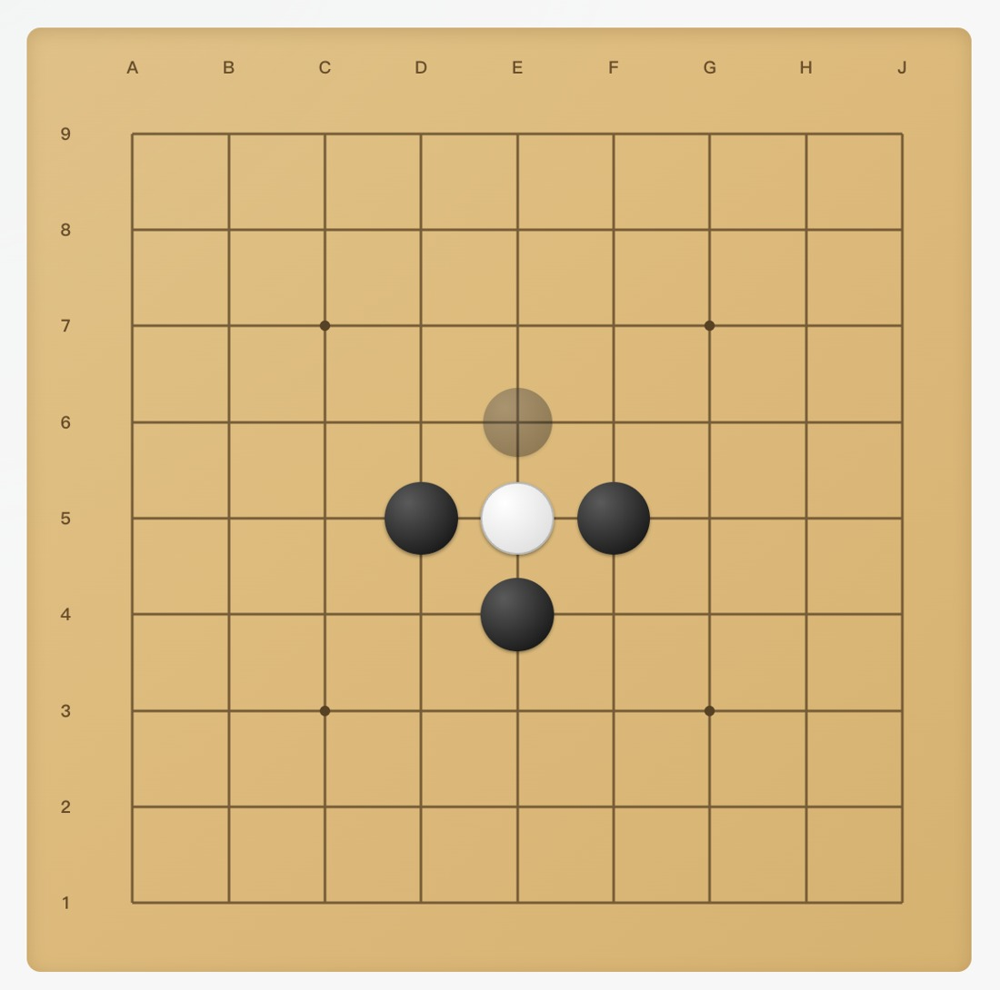
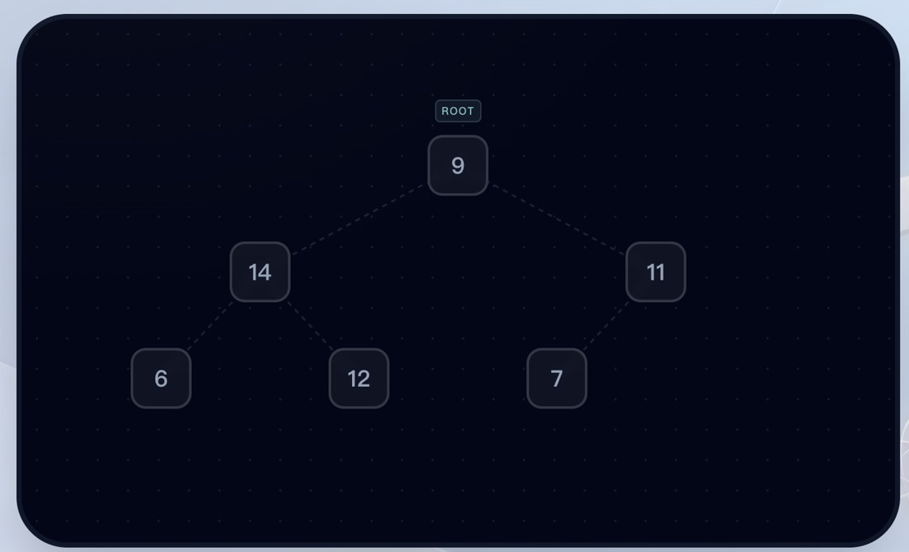

Learn8
以無盡內容與個人化學習為核心的
AI 教育生態系
AI 教育生態系
學習不缺內容，缺的是理解。
組員 范愷鈞・沈晨利・楊詠恩・羅云駿 指導教授 楊傳凱
痛點
答案很容易拿到，卡住的地方卻沒人看見
你到底哪裡不會？
……我也不知道。
25.84%
偏遠國小代理教師比例
（全國 16.58%）
（全國 16.58%）
2.1倍
偏遠國中教師流動率
相較全國平均
相較全國平均
資料：立法院預算中心〈教育部主管 111 年度單位決算評估報告〉，111 學年度
Learn8 的解法
四個環節，接成同一條學習路徑
內容生成
AI 生成整門課
學習過程
依程度量身規劃
競技挑戰
Elo 即時對戰
即時理解
讀取腦波狀態
題型自動對應學科
想學什麼，就長成什麼

圍棋 → 棋盤

資料結構 → 動手操作

AI 概念 → 分類卡
每個學生的課，都為他重新規劃
1診斷問卷摸清程度
2雙代理人AI 規劃＋審查
3知識地圖一關一關解鎖
4補救閉環答錯即補救
教師編輯器
上傳講義
一鍵換題型
一鍵換題型

競技場 Arena
Elo 即時對戰
練習就是競賽，
競賽就是練習。
競賽就是練習。


Neuro Link 即時理解不是監控，而是更早理解。
① 配戴頭帶
② 讀取腦波
③ 主動調整
4
優質教育
呼應聯合國 SDG 4
為每個學生，長出他需要的課
掃描看
完整簡報 →
完整簡報 →